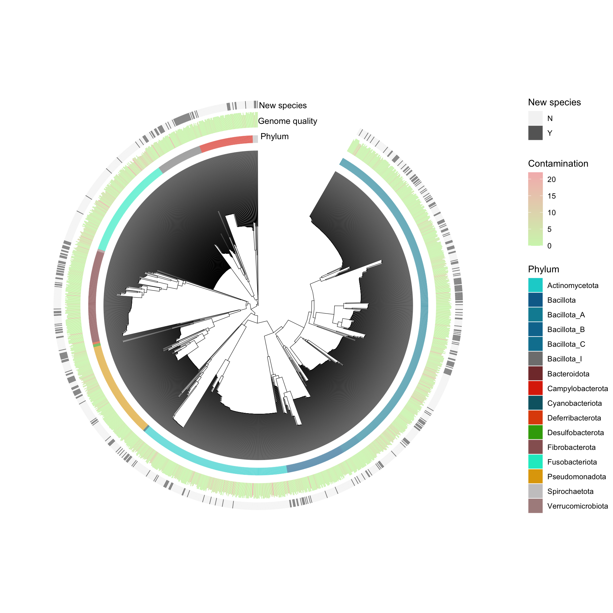
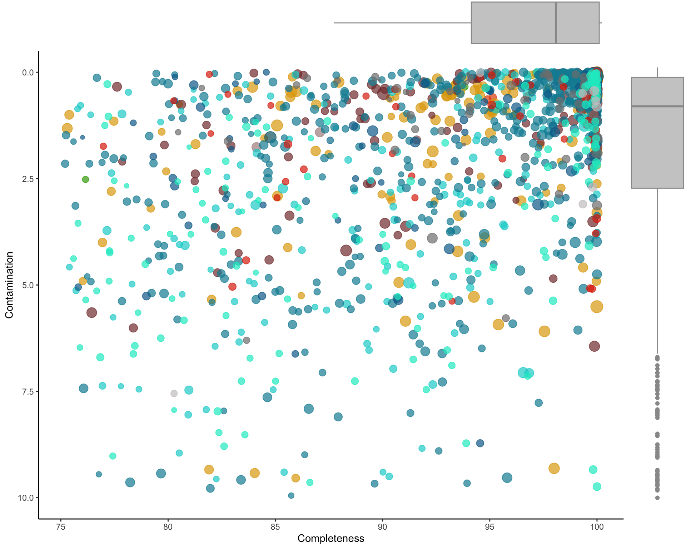
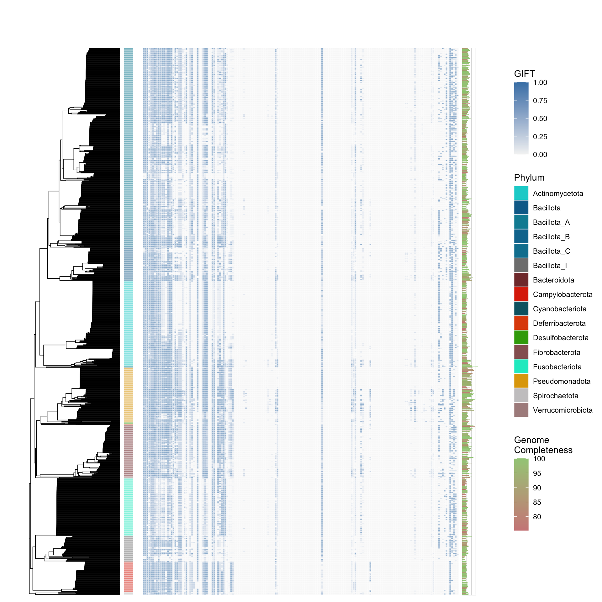
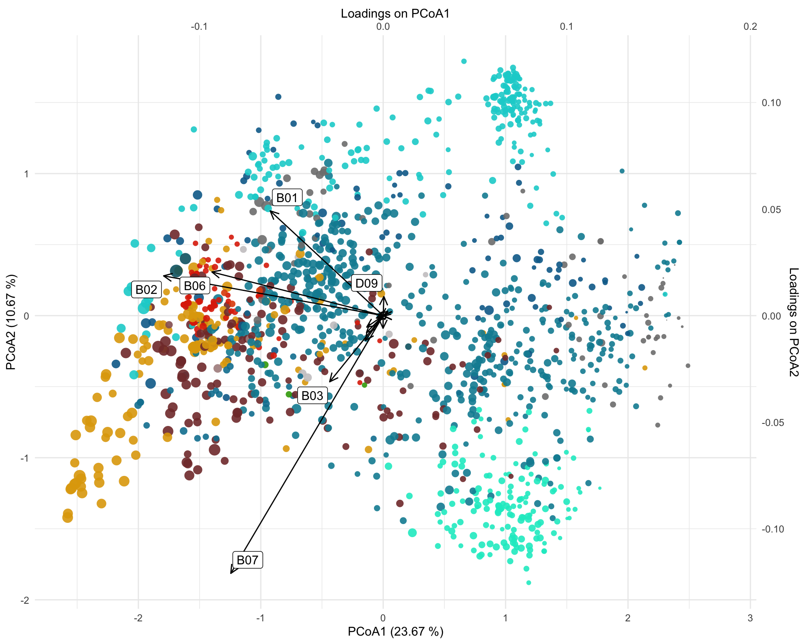
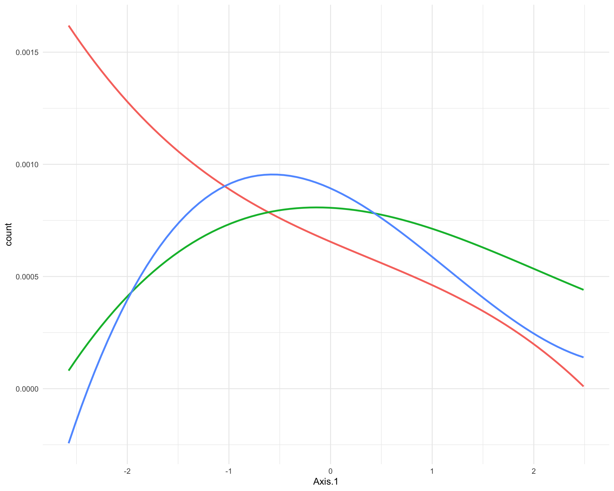

Chapter 4 MAG catalogue
4.1 Genome phylogeny
# Generate the phylum color heatmap
phylum_heatmap <- read_tsv("https://raw.githubusercontent.com/earthhologenome/EHI_taxonomy_colour/main/ehi_phylum_colors.tsv") %>%
right_join(genome_metadata, by=join_by(phylum == phylum)) %>%
arrange(match(genome, genome_tree$tip.label)) %>%
select(genome,phylum) %>%
mutate(phylum = factor(phylum, levels = unique(phylum))) %>%
column_to_rownames(var = "genome")
# Generate new species table
newspecies_table <- genome_metadata %>%
mutate(newspecies=ifelse(species=="","Y","N")) %>%
select(genome,newspecies) %>%
column_to_rownames(var = "genome")
# Generate basal tree
circular_tree <- force.ultrametric(genome_tree, method="extend") %>% # extend to ultrametric for the sake of visualisation
ggtree(., layout="fan", open.angle=10, size=0.2)***************************************************************
* Note: *
* force.ultrametric does not include a formal method to *
* ultrametricize a tree & should only be used to coerce *
* a phylogeny that fails is.ultrametric due to rounding -- *
* not as a substitute for formal rate-smoothing methods. *
***************************************************************# Add phylum ring
circular_tree <- gheatmap(circular_tree, phylum_heatmap, offset=0.05, width=0.05, colnames=FALSE) +
scale_fill_manual(values=phylum_colors, name = "Phylum") +
theme(legend.position = "none", plot.margin = margin(0, 0, 0, 0), panel.margin = margin(0, 0, 0, 0))
# Flush color scale to enable a new color scheme in the next ring
circular_tree <- circular_tree + new_scale_fill()
# Add Completeness ring
circular_tree <- circular_tree +
new_scale_fill() +
scale_fill_gradient(low = "#d1f4ba", high = "#f4baba") +
geom_fruit(
data=genome_metadata,
geom=geom_bar,
mapping = aes(x=Completeness, y=genome, fill=Contamination),
offset = 0.15,
pwidth = 0.1,
orientation="y",
stat="identity")
# Add genome-size ring
circular_tree <- circular_tree + new_scale_fill()
circular_tree <- gheatmap(circular_tree, newspecies_table, offset=0.5, width=0.05, colnames=FALSE) +
scale_fill_manual(values=c("#f4f4f4","#666666"), name = "New species")
theme(legend.position = "none", plot.margin = margin(0, 0, 0, 0), panel.margin = margin(0, 0, 0, 0))List of 3
$ legend.position: chr "none"
$ plot.margin : 'margin' num [1:4] 0points 0points 0points 0points
..- attr(*, "unit")= int 8
$ panel.spacing : 'margin' num [1:4] 0points 0points 0points 0points
..- attr(*, "unit")= int 8
- attr(*, "class")= chr [1:2] "theme" "gg"
- attr(*, "complete")= logi FALSE
- attr(*, "validate")= logi TRUE# Add text
circular_tree <- circular_tree +
annotate('text', x=2.2, y=0, label=' Phylum', family='arial', size=3.5) +
annotate('text', x=2.4, y=0, label=' Genome quality', family='arial', size=3.5) +
annotate('text', x=2.6, y=0, label=' New species', family='arial', size=3.5)
#Plot circular tree
circular_tree %>% open_tree(30) %>% rotate_tree(90)
4.2 Taxonomy overview
Mag number
[1] 1457# genome_metadata <- genome_metadata %>%
# mutate(phylum = case_when(
# phylum == "Bacillota_A" ~ "Bacillota",
# phylum == "Bacillota_C" ~ "Bacillota",
# phylum == "Bacillota_B" ~ "Bacillota",
# phylum == "Bacillota_I" ~ "Bacillota",
# TRUE ~ phylum))
genome_metadata %>%
distinct(phylum)# A tibble: 16 × 1
phylum
<chr>
1 Campylobacterota
2 Bacillota_I
3 Fusobacteriota
4 Actinomycetota
5 Bacillota_A
6 Pseudomonadota
7 Desulfobacterota
8 Bacteroidota
9 Bacillota
10 Spirochaetota
11 Bacillota_C
12 Deferribacterota
13 Bacillota_B
14 Cyanobacteriota
15 Verrucomicrobiota
16 Fibrobacterota tax_mag <-genome_metadata %>%
group_by(phylum) %>%
summarise(mag_n=n())
tax_mag %>%
mutate(percetage_mag=round(mag_n*100/sum(mag_n), 2)) %>%
arrange(-percetage_mag) %>%
tt()| phylum | mag_n | percetage_mag |
|---|---|---|
| Bacillota_A | 501 | 34.39 |
| Actinomycetota | 229 | 15.72 |
| Fusobacteriota | 153 | 10.50 |
| Pseudomonadota | 146 | 10.02 |
| Bacteroidota | 138 | 9.47 |
| Bacillota | 88 | 6.04 |
| Campylobacterota | 81 | 5.56 |
| Bacillota_I | 69 | 4.74 |
| Bacillota_C | 28 | 1.92 |
| Spirochaetota | 8 | 0.55 |
| Desulfobacterota | 4 | 0.27 |
| Cyanobacteriota | 3 | 0.21 |
| Deferribacterota | 3 | 0.21 |
| Verrucomicrobiota | 3 | 0.21 |
| Bacillota_B | 2 | 0.14 |
| Fibrobacterota | 1 | 0.07 |
# A tibble: 104 × 2
phylum family
<chr> <chr>
1 Campylobacterota Helicobacteraceae
2 Bacillota_I Anaeroplasmataceae
3 Fusobacteriota Fusobacteriaceae
4 Actinomycetota Coriobacteriaceae
5 Bacillota_A Peptostreptococcaceae
6 Pseudomonadota Succinivibrionaceae
7 Desulfobacterota Desulfovibrionaceae
8 Pseudomonadota Enterobacteriaceae
9 Bacillota_A Cellulosilyticaceae
10 Bacteroidota Bacteroidaceae
# ℹ 94 more rows4.3 Genome quality
genome_metadata %>%
summarise(Contamination_mean=mean(Contamination),sd_cont=sd(Contamination),Completeness_mean=mean(Completeness),sd_comp=sd(Completeness)) %>%
mutate(Contamination=str_c(round(Contamination_mean,2),"±",round(sd_cont,2)),
Completeness=str_c(round(Completeness_mean,2),"±",round(sd_comp,2))) %>%
select(Completeness, Contamination) %>%
tt()| Completeness | Contamination |
|---|---|
| 93.19±7.24 | 2.16±2.97 |
#Generate quality biplot
genome_biplot <- genome_metadata %>%
select(c(genome,domain,phylum,Completeness,Contamination,length)) %>%
arrange(match(genome, rev(genome_tree$tip.label))) %>% #sort MAGs according to phylogenetic tree
ggplot(aes(x=Completeness,y=Contamination,size=length,color=phylum)) +
geom_point(alpha=0.7) +
ylim(c(10,0)) +
scale_color_manual(values=phylum_colors) +
labs(y= "Contamination", x = "Completeness") +
theme_classic() +
theme(legend.position = "none")
#Generate Contamination boxplot
genome_Contamination <- genome_metadata %>%
ggplot(aes(y=Contamination)) +
ylim(c(10,0)) +
geom_boxplot(colour = "#999999", fill="#cccccc") +
theme_void() +
theme(legend.position = "none",
axis.title.x = element_blank(),
axis.title.y = element_blank(),
axis.text.y=element_blank(),
axis.ticks.y=element_blank(),
axis.text.x=element_blank(),
axis.ticks.x=element_blank(),
plot.margin = unit(c(0, 0, 0.40, 0),"inches")) #add bottom-margin (top, right, bottom, left)
#Generate Completeness boxplot
genome_Completeness <- genome_metadata %>%
ggplot(aes(x=Completeness)) +
xlim(c(50,100)) +
geom_boxplot(colour = "#999999", fill="#cccccc") +
theme_void() +
theme(legend.position = "none",
axis.title.x = element_blank(),
axis.title.y = element_blank(),
axis.text.y=element_blank(),
axis.ticks.y=element_blank(),
axis.text.x=element_blank(),
axis.ticks.x=element_blank(),
plot.margin = unit(c(0, 0, 0, 0.50),"inches")) #add left-margin (top, right, bottom, left)
#Render composite figure
grid.arrange(grobs = list(genome_Completeness,genome_biplot,genome_Contamination),
layout_matrix = rbind(c(1,1,1,1,1,1,1,1,1,1,1,4),
c(2,2,2,2,2,2,2,2,2,2,2,3),
c(2,2,2,2,2,2,2,2,2,2,2,3),
c(2,2,2,2,2,2,2,2,2,2,2,3),
c(2,2,2,2,2,2,2,2,2,2,2,3),
c(2,2,2,2,2,2,2,2,2,2,2,3),
c(2,2,2,2,2,2,2,2,2,2,2,3),
c(2,2,2,2,2,2,2,2,2,2,2,3),
c(2,2,2,2,2,2,2,2,2,2,2,3),
c(2,2,2,2,2,2,2,2,2,2,2,3),
c(2,2,2,2,2,2,2,2,2,2,2,3),
c(2,2,2,2,2,2,2,2,2,2,2,3)))
4.4 Functional overview
# Aggregate basal GIFT into elements
function_table <- genome_gifts %>%
to.elements(., GIFT_db)
# Generate basal tree
function_tree <- force.ultrametric(genome_tree, method="extend") %>%
ggtree(., size = 0.3) ***************************************************************
* Note: *
* force.ultrametric does not include a formal method to *
* ultrametricize a tree & should only be used to coerce *
* a phylogeny that fails is.ultrametric due to rounding -- *
* not as a substitute for formal rate-smoothing methods. *
***************************************************************#Add phylum colors next to the tree tips
function_tree <- gheatmap(function_tree, phylum_heatmap, offset=0, width=0.1, colnames=FALSE) +
scale_fill_manual(values=phylum_colors) +
labs(fill="Phylum")
#Reset fill scale to use a different colour profile in the heatmap
function_tree <- function_tree + new_scale_fill()
#Add functions heatmap
function_tree <- gheatmap(function_tree, function_table, offset=0.5, width=3.5, colnames=FALSE) +
vexpand(.08) +
coord_cartesian(clip = "off") +
scale_fill_gradient(low = "#f4f4f4", high = "steelblue", na.value="white") +
labs(fill="GIFT")
#Reset fill scale to use a different colour profile in the heatmap
function_tree <- function_tree + new_scale_fill()
# Add Completeness barplots
function_tree <- function_tree +
geom_fruit(data=genome_metadata,
geom=geom_bar,
grid.params=list(axis="x", text.size=2, nbreak = 1),
axis.params=list(vline=TRUE),
mapping = aes(x=length, y=genome, fill=Completeness),
offset = 3.8,
orientation="y",
stat="identity") +
scale_fill_gradient(low = "#cf8888", high = "#a2cc87") +
labs(fill="Genome\nCompleteness")
function_tree
4.5 Functional ordination
PCoA functional ordination with PCA loadings.
gift_pcoa <- genome_gifts %>%
to.elements(., GIFT_db) %>%
as.data.frame() %>%
vegdist(method="euclidean") %>%
pcoa()
gift_pcoa_rel_eigen <- gift_pcoa$values$Relative_eig[1:10]
# Get genome positions
gift_pcoa_vectors <- gift_pcoa$vectors %>% #extract vectors
as.data.frame() %>%
select(Axis.1,Axis.2) # keep the first 2 axes
gift_pcoa_eigenvalues <- gift_pcoa$values$Eigenvalues[c(1,2)]
gift_pcoa_gifts <- cov(genome_gifts, scale(gift_pcoa_vectors)) %*% diag((gift_pcoa_eigenvalues/(nrow(genome_gifts)-1))^(-0.5)) %>%
as.data.frame() %>%
rename(Axis.1=1,Axis.2=2) %>%
rownames_to_column(var="label") %>%
#get function summary vectors
mutate(func=substr(label,1,3)) %>%
group_by(func) %>%
summarise(Axis.1=mean(Axis.1),
Axis.2=mean(Axis.2)) %>%
rename(label=func) %>%
filter(!label %in% c("S01","S02","S03"))scale <- 15
gift_pcoa_vectors %>%
rownames_to_column(var="genome") %>%
left_join(genome_metadata, by="genome") %>%
ggplot() +
#genome positions
scale_color_manual(values=phylum_colors)+
geom_point(aes(x=Axis.1,y=Axis.2, color=phylum, size=length),
alpha=0.9, shape=16) +
#scale_color_manual(values=phylum_colors) +
scale_size_continuous(range = c(0.1,5)) +
#loading positions
geom_segment(data=gift_pcoa_gifts,
aes(x=0, y=0, xend=Axis.1 * scale, yend=Axis.2 * scale),
arrow = arrow(length = unit(0.3, "cm"),
type = "open",
angle = 25),
linewidth = 0.5,
color = "black") +
#Primary and secondary scale adjustments
scale_x_continuous(name = paste0("PCoA1 (",round(gift_pcoa_rel_eigen[1]*100, digits = 2), " %)"),
sec.axis = sec_axis(~ . / scale, name = "Loadings on PCoA1")
) +
scale_y_continuous(name = paste0("PCoA2 (",round(gift_pcoa_rel_eigen[2]*100, digits = 2), " %)"),
sec.axis = sec_axis(~ . / scale, name = "Loadings on PCoA2")
) +
geom_label_repel(data = gift_pcoa_gifts,
aes(label = label, x = Axis.1 * scale, y = Axis.2 * scale),
segment.color = 'transparent') +
theme_minimal() +
theme(legend.position = "none")
sample_metadata <- sample_metadata %>%
mutate(country = if_else(country == "Shangai domestic dog", "Shangai", country)) %>%
mutate(
dog_type = case_when(
breed == "Wolf" ~ "wolf",
country == "Greenland" ~ "sled_dog",
TRUE ~ "domestic"
)
)
genome_counts_filt %>%
mutate_at(vars(-genome),~./sum(.)) %>%
pivot_longer(-genome, names_to = "sample", values_to = "count") %>%
left_join(sample_metadata, by = join_by(sample == sample)) %>%
filter(!is.na(dog_type)) %>%
group_by(genome,dog_type) %>%
summarise(count=mean(count)) %>%
left_join(gift_pcoa_vectors %>% rownames_to_column(var="genome"), by="genome") %>%
left_join(genome_metadata, by="genome") %>%
ggplot(aes(x=Axis.1, y=count, group=dog_type, color=dog_type)) +
geom_smooth(method = lm, formula = y ~ splines::bs(x, 3), se = FALSE) +
theme_minimal() +
theme(legend.position = "none")